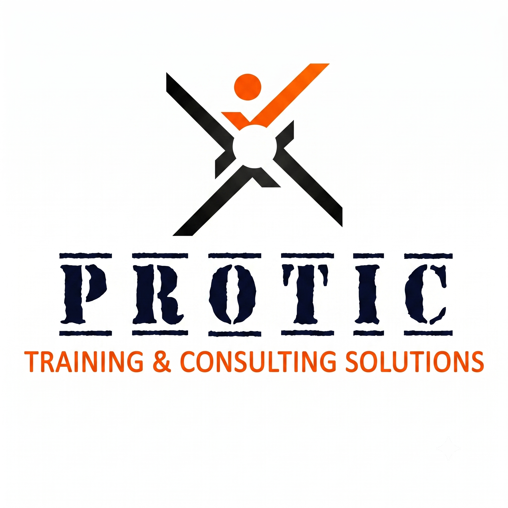

نساعد الجمعيات والمؤسسات غير الربحية على بناء مواقعها الرسمية المتجاوبة، وأتمتة قواعد بيانات وسجلات المستفيدين، وتنظيم وحوكمة برامج المتطوعين، إلى جانب صياغة مقترحات المشروعات والتأهيل للمنح الدولية والمحلية لتوثيق الأثر وتحقيق الاستدامة.
منظومة شاملة صُممت خصيصاً لتلبية متطلبات الجمعيات الأهلية والمجتمعية
بناء وتصميم موقع إلكتروني احترافي متجاوب يوثق أنشطة الجمعية، تقارير الإنجاز، وقصص الأثر لتعزيز ثقة المانحين والداعمين.
طلب تصميم موقع للجمعيةنقل الجمعية من السجلات الورقية المبعثرة إلى منظومة وقواعد بيانات سحابية مشفرة لإدارة وتصنيف المستفيدين وتوزيع المساعدات.
طلب أتمتة سجلات المستفيدينهيكلة وتصنيف المتطوعين، استمارات التسجيل الرقمية، توثيق الساعات التطوعية، وإصدار شهادات المشاركة المعتمدة بكفاءة.
طلب هيكلة برنامج التطوعإعداد الملف التعريفي المؤسسي، مراجعة معايير الجهات المانحة الدولية، وصياغة مقترحات المشروعات التنموية والذكية والبيئية.
طلب استشارة تأهيل للمنحأجب على المعايير الستة أدناه لتشخيص الوضع المؤسسي لجمعيتك واستخراج تقرير فوري بنقاط القوة، نقاط الضعف، وخطة العمل التالية:
حدد خيارات المعايير الستة أعلاه للتعرف على جاهزية جمعيتك واستخراج التقرير التشخيصي المتخصص.
خارطة طريق واضحة ومجربة لتمكين وتطوير الكيانات غير الربحية
تقييم الوضع الرقمي والمؤسسي للجمعية وتحديد الأولويات العاجلة للتطوير والتأهيل.
تصميم الموقع الرسمي للجمعية وأتمتة سجلات المستفيدين وتنظيم إدارة المتطوعين.
مطابقة أنشطة الجمعية مع المنح الدولية وصياغة المقترحات المكتملة المعايير.
إرسال طلبات التمويل، إطلاق المشروعات، وإصدار تقارير قياس الأثر لضمان الاستدامة.
كل ما تحتاج معرفته عن سياسة تقديم الخدمات، التحول الرقمي، والتأهيل للمنح
نقدم 8 حلول متكاملة تشمل: تصميم وتطوير المواقع الرسمية (.org / .com)، أتمتة سجلات وقواعد بيانات المستفيدين سحابياً، حوكمة وإدارة برامج المتطوعين وتوثيق الساعات، صياغة المقترحات والمكون الذكي للمنح، تصميم الهوية البصرية وتقارير الأثر السنوية، وبناء لوحات متابعة الأداء (M&E).
الاستشارات المؤسسية، التوجيه، إرشاد كتابة المقترحات، وبرامج المتطوعين تقدمها NGOHUB كمبادرة تنموية مجانية. أما الخدمات التي تتطلب حجز موارد خارجية مدفوعة مثل: حجز النطاق الرسمي (.org)، والسيرفرات والاستضافات السحابية السنوية، فتوفرها المنصة بسعر التكلفة المباشرة لمزودي الخدمة أو باستخدام سيرفرات واستضافة الجمعية الخاصة دون أي هوامش ربحية.
نساعد الجمعية في استيفاء الشروط الأساسية التي يطلبها المانحون: 1) وجود موقع إلكتروني رسمي يوثق أنشطتها وسابقة أعمالها. 2) منظومة وقواعد بيانات منظمة للمستفيدين. 3) صياغة مقترح المشروع بمكون ذكي أو بيئي وتحديد مؤشرات الأثر المستدام.
نعم بالتأكيد! صُممت منصة NGOHUB خصيصاً لمساندة الجمعيات الصغيرة والمتوسطة في كافة المحافظات بمصر والوطن العربي، لمساعدتها على امتلاك أدوات رقمية احترافية تضاهي المؤسسات الكبرى لتمكينها من المنافسة العادلة على التمويلات.
هيئات وجمعيات ومؤسسات أهلية وحكومية وخاصة جمعنا بها تعاون وتنسيق مشترك

الشريك المجتمعي الرئيسي في تطبيق المشروعات الميدانية وتنظيم القوافل وتدريب الكوادر الأهلية.

التعاون في دعم برامج التدخل المبكر والتحول الرقمي لخدمات رعاية وتأهيل الأطفال ذوي الإعاقة.

التعاون والتنسيق في الفعاليات والمشروعات التنموية وخدمة الجمعيات الأهلية بمحافظة البحيرة.

تقديم برامج التدريب المتخصص لكوادر الجمعيات في مجالات الاستدامة البيئية وإدارة المخلفات.

دعم رائدات الأعمال في المشروعات الخضراء وإتاحة فرص التمويل والتسويق الرقمي لمبادراتهن.

الذراع الاستشاري والإعلامي في المملكة العربية السعودية لتطوير المحتوى المؤسسي والشراكات التنموية.

المبادرة الشبابية الرائدة في إدماج الشباب بالعمل التطوعي والبيئي وإعداد وتأهيل الكوادر الميدانية.

تطوير المنصة الرقمية وحاسبات خفض الانبعاثات بالتعاون مع مرفق البيئة العالمي SGP/GEF/UNDP.

تقديم الاستشارات المتخصصة في بناء القدرات المؤسسية وتطوير الحلول البرمجية للجمعيات الأهلية.

التعاون في أتمتة سجلات المساعدات ودعم الأسر الأولى بالرعاية والأنشطة التنموية المجتمعية.

التعاون في تأهيل الكوادر الهندسية والتحول الرقمي للمكون الذكي بالمشروعات التنموية.

العمل على دعم الجمعيات والمؤسسات الأهلية المشهرة رسمياً لتعزيز مساهمتها التنموية في المجتمع.


أكثر من 66 فرصة ومنحة نشطة وموثقة من كبرى الهيئات الدولية والمانحين لتمويل الجمعيات والمشروعات والشباب
نظام خدمات متكامل يشمل حلولاً برمجية مدفوعة للبنية التحتية، وخدمات استشارية ومبادرات تمكينية
الخدمات الاستشارية، الإرشادية، وتأهيل المكون الذكي تقدمها NGOHUB كمبادرة تنموية مجانية. أما الخدمات التي تحمل شارة [مدفوع] فهي تتطلب حجز موارد تقنية خارجية مدفوعة مثل: حجز النطاق الرسمي (.org / .com) والسيرفرات والاستضافات السحابية السنوية؛ وتوفرها المنصة بالتكلفة الفعلية المباشرة لمزودي الاستضافة أو من خلال سيرفرات واستضافة الجمعية الخاصة.
مبادرة تنموية متخصصة في تمكين المجتمع المدني وربطه بالتكنولوجيا والمنح
NGOHUB هي منصة تنموية انطلقت لتمكين الجمعيات الأهلية والمشروعات المجتمعية، وخاصة الصغيرة والمتوسطة، من خلال حلول رقمية ومؤسسية تساعدها على تحسين الظهور، توثيق الأثر، تنظيم العمل، إدارة المتطوعين، والجاهزية للمنح.
تتعاون NGOHUB مع نخبة من الجمعيات والمؤسسات الرائدة مثل جمعية الإسراء (الشريك المجتمعي)، بنيان للتدخل المبكر، مركز التدريب البيئي، حاضنة الأعمال البيئية للمرأة، وPR CUBE (الشريك السعودي)، لتقديم حلول شاملة ومستدامة.
ميزتنا أن المتطوعين شباب معاصر للتكنولوجيا وأدوات الذكاء الاصطناعي، وفاهمين التطوع من الداخل. على عكس الوكالات التجارية (Media Agencies) التي تتحدث بلغة التسويق والأرباح، نحن نتحدث لغة العمل التنموي والأثر الميداني.
أدخل اسم المستخدم وكلمة المرور الإدارية للوصول وإدارة المنظومة